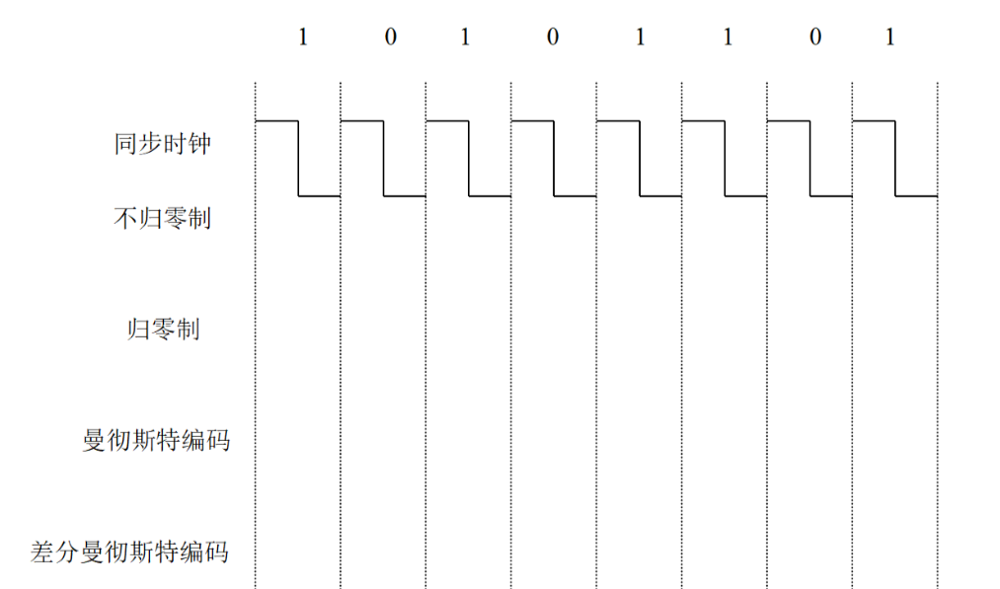
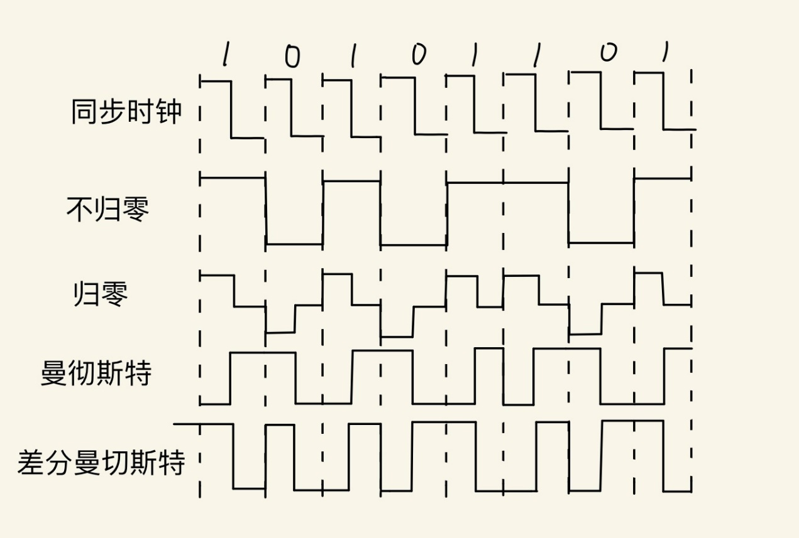
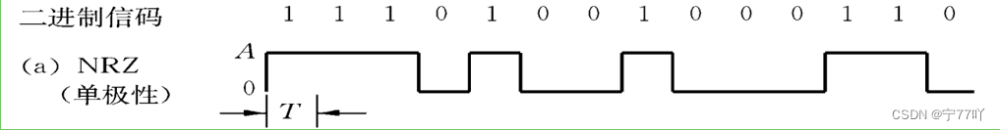
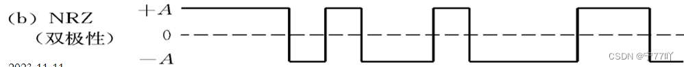
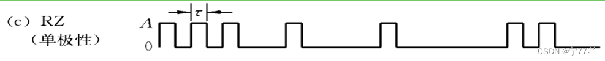
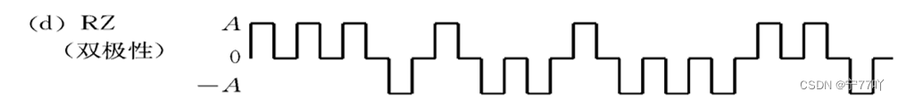

第 2 章 作业 · 物理层
题目 1香农公式与信噪比
题目
用香农公式计算一下，假定信道带宽为 3100 Hz，最大信息传输速率为 35 kbit/s，那么若想使最大信息传输速率增加 60%，问信噪比 S/N 应增大到多少倍？如果在刚才计算的基础上将信噪比 S/N 再增加 10 倍，问最大信息传输速率能否再增加 20%？
参考答案
（1）把最大信息传输速率提高 60% 所需的信噪比倍数
香农容量：C = B·log2(1 + SNR)，B = 3100 Hz。
现有 C0 = 35 kbit/s = 35000 bit/s。
SNR0 = 2^(C0/B) − 1 = 2^(35000/3100) − 1 ≈ 2^11.2903 − 1 ≈ 2.50×10^3。
增加 60% 后 C1 = 1.6C0 = 56000 bit/s。
SNR1 = 2^(C1/B) − 1 = 2^(56000/3100) − 1 ≈ 2^18.0645 − 1 ≈ 2.74×10^5。
需要把信噪比提高的倍数：SNR1/SNR0 ≈ 2.74×10^5 / 2.50×10^3 ≈ 1.10×10^2 ≈ 110 倍。
（2）在此基础上再把 S/N 增加 10 倍，速率能否再增加 20%
在此基础上再把 SNR 乘以 10：
r1 = C1/B = 18.0645 bits/s/Hz。
r2 = log2(1 + 10·SNR1) ≈ r1 + log2(10) ≈ 18.0645 + 3.3219 = 21.3864。
速率提升比例：C2/C1 = r2/r1 ≈ 21.3864/18.0645 ≈ 1.1839，即约 18.4%。
结论
- 要把最大信息传输速率提高 60%，S/N 需提高约 110 倍。
- 在此基础上即使再把 S/N 增加 10 倍，最大信息传输速率也只能再提高约 18.4%，达不到 20%。
题目 2GBN 协议的窗口与 ACK
题目
考虑一个 GBN 协议，发送方窗口大小为 4，序号空间为 1024。时刻 t，接收方「期待的下一个有序分组」的序号为 k（信道不重排）。请问：
- 发送方窗口内的报文序号
- 正在回传途中的 ACK 字段的可能值
参考答案
（1）发送方窗口内的报文序号
发送方可能仍没收到最近 0~4 个累计 ACK，因此其窗口起点可能为 k−4…k。
窗口内的序号必为下面 5 种连续的 4 个序号之一（按 1024 取模）：
- [k−4, k−1]
- [k−3, k]
- [k−2, k+1]
- [k−1, k+2]
- [k, k+3]
（2）正在回传途中的 ACK 字段的可能值
接收方当前期待的是 k，因此网络中向发送方传播的 ACK 可能是它此前发出的最近 4 个累计确认：
ACK ∈ {k−4, k−3, k−2, k−1}（按 1024 取模）
题目 3SR 协议接收窗口改造
题目
现在我们对 SR 协议做一个简单的改造，接收方可以将自己的接收窗口大小 X 通知发送方，发送方在收到该通知后，将自己的发送窗口大小设置为 X。现在 A 准备发送 20K 字节的数据，B 初始化得到了一个大小为 6K 字节的接收缓冲区，并通知了 A。假设 A 和 B 在传送数据时，分组大小为 1K 字节，分组编号从 0 开始。现在 AB 之间发生了以下事件：
- A 发送了 3K 字节的数据；
- A 又发送了 2K 字节的数据；
- B 收到了 5K 字节的数据，经过校验，2K-3K 字节间的数据出错，此时 B 的接收缓冲区被系统收回 3K 字节，B 向 A 发送了选择性否认应答（NACK 2 buf 3K），A 收到了 B 发出的该应答；
- A 发送完此时缓冲区中需要发送的所有数据；
- B 正确收到了 A 发送的上述数据，并又从系统额外申请了 1K 字节的接收缓冲区，B 对 A 发送的上述数据做确认应答（ACK），A 收到了 B 发出的确认应答；
现在请画图描述 A 在每一步骤后的变化情况，包括：发送窗口数据序号区域、发送并被确认的数据序号区间、发送但未被确认的数据序号区间、可以发送的数据序号区间和不能发送的数据序号区间。
参考答案
（1）A 发送了 3K 字节的数据后
发送窗口区域：0-5；已确：无；已发未确：0–2；可发：3–5；不可发：6–19
（2）A 又发送了 2K 字节的数据后
发送窗口区域：0-5；已确：无；已发未确：0–4；可发：5；不可发：6–19
（3）B 收回 3K 缓冲区并发出 NACK 2 buf 3K，A 收到该应答后
发送窗口区域：2-4；已确：0、1、3、4；已发未确：2；可发：2（只有可重传 2；新数据不可发）；不可发：5–19。（NACK 2 buf 3K）
（4）A 把需要发的都发完后
A 把需要发的都发完 → 仅重传编号 2。
已确：0–1、3、4；已发未确：2；可发：无；不可发：5–19。
（5）B 额外申请 1K 缓冲区并发出 ACK，A 收到该确认应答后
发送窗口区域：5-8；已确：0–4；已发未确：无；可发：5–8；不可发：9–19。
题目 4数字信号编码波形
题目
数字信号和数位化编码的数据之间存在着自然的联系。信号编码在执行中伪装了数据，并且能够有效地承载数据，某种程度上增强了信息的安全性。按照要求表示数字信号编码波形，初始状态为高电平，严格使用尺子和铅笔作图。

参考答案
不归零编码和归零编码每一种都有单极脉冲和双极脉冲 2 种形式，下图是双极脉冲。

补充说明：展示单极脉冲和双极脉冲的差别



